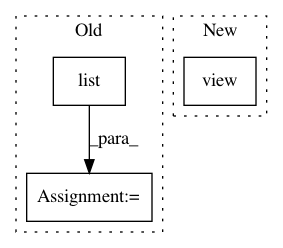

c0458f0c0fb84c27570d91c6a971e29109649fca,torch_geometric/utils/convert.py,,from_networkx,#Any#,81
Before Change
keys = []
keys += list(list(G.nodes(data=True))[0][1].keys())
keys += list(list(G.edges(data=True))[0][2].keys())
data = {key: [] for key in keys}
for _, feat_dict in G.nodes(data=True):
for key, value in feat_dict.items():
data[key].append(value)
After Change
except ValueError:
pass
data["edge_index"] = edge_index.view(2, -1)
data = torch_geometric.data.Data.from_dict(data)
data.num_nodes = G.number_of_nodes()
return data
In pattern: SUPERPATTERN
Frequency: 3
Non-data size: 3
Instances
Project Name: rusty1s/pytorch_geometric
Commit Name: c0458f0c0fb84c27570d91c6a971e29109649fca
Time: 2020-01-06
Author: matthias.fey@tu-dortmund.de
File Name: torch_geometric/utils/convert.py
Class Name:
Method Name: from_networkx
Project Name: rusty1s/pytorch_geometric
Commit Name: 57c71199259bc937e5a58770cd3733fd65e0ef84
Time: 2019-06-07
Author: matthias.fey@tu-dortmund.de
File Name: torch_geometric/utils/to_dense_batch.py
Class Name:
Method Name: to_dense_batch
Project Name: cornellius-gp/gpytorch
Commit Name: b2951813547426828d313a80c52de8a619e99731
Time: 2018-11-26
Author: gpleiss@gmail.com
File Name: gpytorch/lazy/constant_mul_lazy_tensor.py
Class Name: ConstantMulLazyTensor
Method Name: _quad_form_derivative